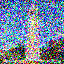
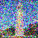
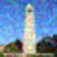
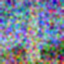
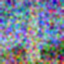
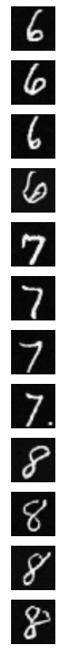

I used DeepFloyd's stage_1 and stage_2 objects for generation. The seed I used was 180.
'an oil painting of a snowy mountain village': the output from stage1 is small and thus blurry while the output from stage2 is bigger and more clear. It does show a snowy village. However, it does not look like an oil painting.


'a man wearing a hat': the output does show a man wearing a hat, but the man's eyes are not proper generated, and the background is just grey. But overall, the quality is good.

'a rocket ship': the output is an animated rocket ship.

I changed the num_inference_steps for 'a man wearing a hat':
num_inference_steps=5: The process was indeed faster, but the quality was not as good. In this newly generate image, we could barely see the hat.
num_inference_steps=80: The process was much slower. The output image has a more realistic background, and the man's gesture looks more natural.
I used the equation below to calculate a noisy image x_t at timestep t.
Here's the original image:

Here are the images at noise level 250, 500, 750. The image becomes noiser as the noise level increases.
 


Below are the images at noise level 250, 500, 750:
Below are the images that used Gaussian blur filtering to try to remove the noise: I used torchvision.transforms.functional.gaussian_blur.
 

Below are the noisy images at noise level 250, 500, 750:
Below are the images that used one-step denoising: I first used UNet to estimate the noise. Then I used the equation from above to predict x0 from xt and t.


I first created a list of strided timesteps, which was a list of monotonically decreasing timesteps, starting at 990, with a stride of 30, eventually reaching 0. Then I used the formula below to iteratively calculate x at the next timestep. Eventually, the image went from from more noisy to less noisy.
Below are the noisy images at noise level 90, 240, 390, 540, 690:

Below are the original image, iteratively denoised image, one-step denoised image, and gaussian blurred image:
Here are 5 sampled images by using the iterative_denoise function from previous section and setting i_start = 0:
By using CFG, I computed both a conditional and an unconditional noise estimate. The new noise estimate is thus provided by the equation below.
Here are 5 sampled images using CFG with ùõæ=7:
I started with a noisy image, then I set different start of the noise levels. As the start of the noise level increases, it matches the original image closer.
Test Image
Here are the edits of the test image at noise levels 1, 3, 5, 7, 10, 20: They gradually match the original image closer and closer.
My Test Image 1
Here are the edits of my test image 1 at noise levels 1, 3, 5, 7, 10, 20:


My Test Image 2
Here are the edits of my test image 2 at noise levels 1, 3, 5, 7, 10, 20:
For the painted image, it overall matches the original image better than the drawn images.
For my drawn images, when i_start is small, the generated images are not relevant at all. But when i_start is at 10, 20, 30, it matches closer.
Here's a painted image from the web:
Here are the edits of this web image at noise levels 1, 3, 5, 7, 10, 20:
Here's a drawn image: I drew a tree.
Here are the edits of this drawn image at noise levels 1, 3, 5, 7, 10, 20, 30:
Here's another drawn image: I drew a bird.
Here are the edits of this drawn image at noise levels 1, 3, 5, 7, 10, 20, 30:
To inpaint, I used a binary mask. The generated image has same content where mask m is 0 but new content wherever mask m is 1.
Here's the test image inpainted:


Here's my test image 1 inpainted:

Here's my test image 2 inpainted:
The images gradually look more like original image as the noise level increases, but they also look somewhat like the text prompt.
Here are the edits of the test image at noise levels 1, 3, 5, 7, 10, 20 with the prompt "a rocket ship"
Here are the edits of my test image 1 at noise levels 1, 3, 5, 7, 10, 20 with the prompt "an oil painting of a snowy mountain village"


Here are the edits of my test image 2 at noise levels 1, 3, 5, 7, 10, 20 with the prompt "a man wearing a hat"
I used the following algorithm to obtain the visual anagrams, where p1 and p2 are two different text prompt embeddings, flip() is a function that flips the image top to bottom.
Here's a visual anagram where on one orientation "an oil painting of people around a campfire" is displayed and, when flipped, "an oil painting of an old man" is displayed.
Here's a visual anagram where on one orientation "an oil painting of a snowy mountain village" is displayed and, when flipped, "a photo of the amalfi coast" is displayed.
Here's a visual anagram where on one orientation "a lithograph of waterfalls" is displayed and, when flipped, "a photo of dog" is displayed.
I used the algorithm below: first use the diffusion model over p1 and p2, which are 2 different text prompt embeddings. Then lowpass the first noise estimate and highpass the second noise estimate. So we get an image that looks like one thing from far away but another object from close up.
Here's an image that looks like a skull from far away but a waterfall from close up.
Here's an image that looks like a man from far away but a snowy mountain village from close up.
Here's an image that looks like a rocket ship from far away but a dog from close up.
A visualization of the noising process using 0.0, 0.2, 0.4, 0.5, 0.6, 0.8, 1.0:
A training loss curve plot every few iterations during the whole training process:
Sample results on the test set after the first epoch: from top to bottom, the images show the input, the noisy image with noise level = 0.5, and the output.
Sample results on the test set after the 5th epoch:
Sample results on the test set with out-of-distribution noise levels after the model is trained: from left to right are noise level 0.0, 0.2, 0.4, 0.5, 0.6, 0.8, 1.0. The images on top are noisy images while the ones on the bottom are denoised outputs.

Training loss curve plot over the whole training process:

Sampling results for the time-conditioned UNet for 5 epochs.
Sampling results for the time-conditioned UNet for 20 epochs.
A training loss curve plot for the class-conditioned UNet over the whole training process:
Sampling results for the class-conditioned UNet for 5 epochs
Sampling results for the class-conditioned UNet for 20 epochs
